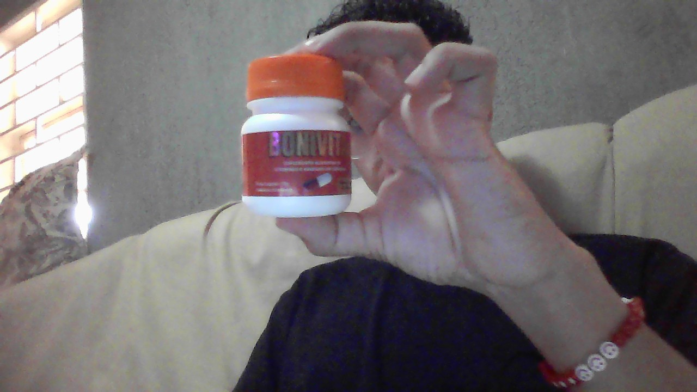

Essas são imagens.
Projeto: Cuidando de Mim – Corpo, Mente e Rotina Nesta página, apresento um recorte da minha rotina de autocuidado e bem-estar, por meio de cinco imagens que representam momentos importantes do meu dia a dia. Desde o início da manhã até o fim da noite, busco equilibrar o físico e o mental com pequenas atitudes que fazem a diferença na minha saúde. A primeira imagem mostra o começo do meu dia: despertando e me preparando mentalmente para os desafios. Em seguida, na segunda foto, o foco é na suplementação — uso o Bonivit como parte do meu cuidado com a saúde, garantindo os nutrientes que meu corpo precisa. Na terceira imagem, estou a caminho da academia. A atividade física é essencial não só para manter o corpo ativo, mas também para aliviar o estresse e clarear a mente. Já a quarta imagem retrata o fim do treino, quando volto para casa sentindo que cumpri meu dever comigo mesmo. Por fim, a quinta imagem mostra um momento de reflexão noturna. Gosto de ficar em silêncio, com as luzes apagadas, apenas pensando. Esse tempo comigo mesmo me ajuda a descansar e organizar os pensamentos. Com essas cinco imagens, represento minha busca diária por equilíbrio entre corpo e mente.
